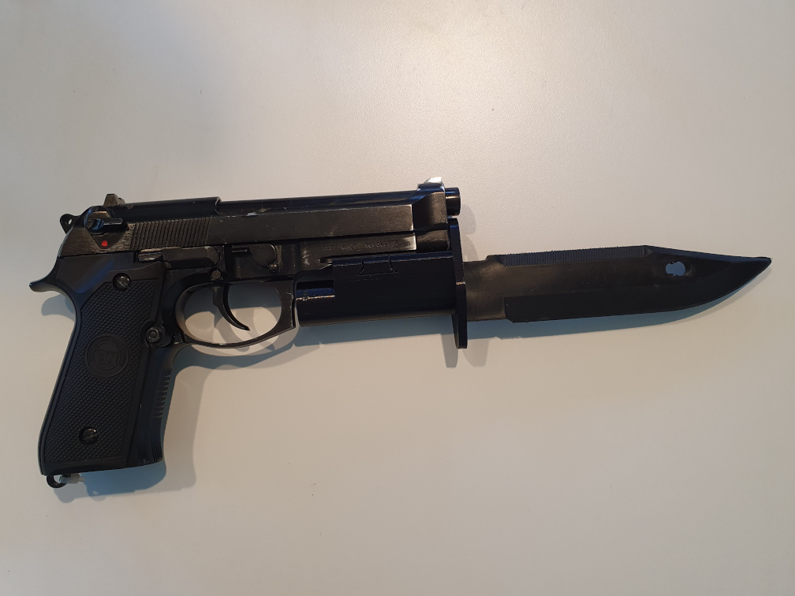

Q-Prop Creations
Pistol Bayonet
Bayonets and bayonet charges have fallen out of favour since the invention of the machine gun. So why not put a bayonet on a side arm? Totally ridiculous is one of my favourite ideas. This design uses a Picatinny rail mount and uses the soft rubber blade from a cheap M9 bayonet. The bayonet handle is much shorter, and uncomfortable to hold in your hand. The muzzle loop of the original is now infront of the recoil spring.
